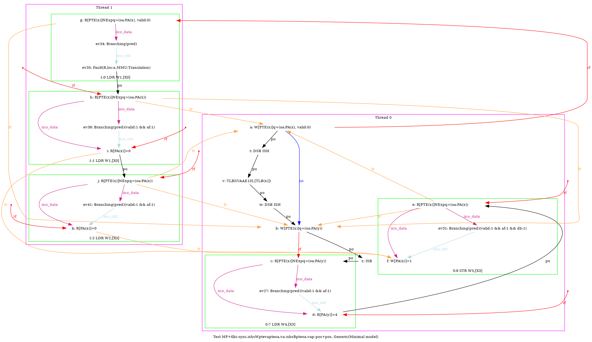
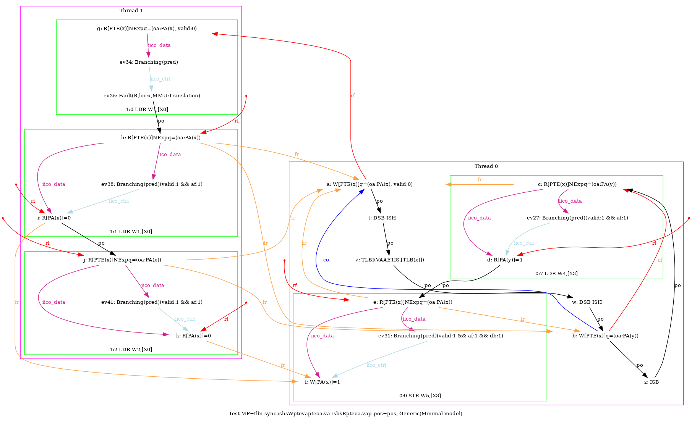
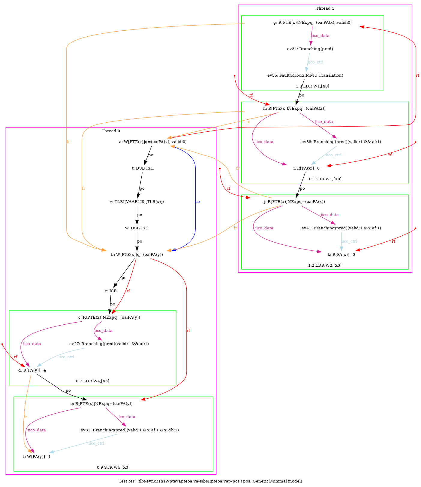
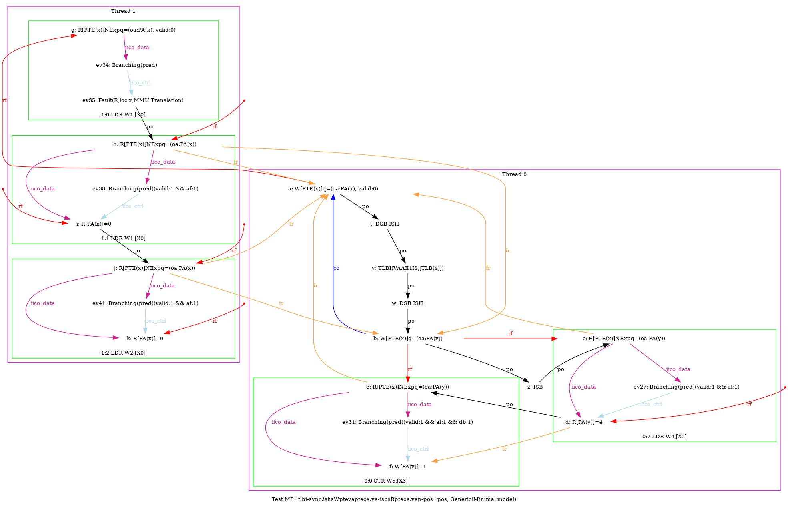

   …
AArch64 MP+tlbi-sync.ishsWptevapteoa.va-isbsRpteoa.vap-pos+pos
"TLBI-sync.ISHsWWPteVAPteOA.VA ISBsWRPteOA.VAP PosRW Rfe PosRR FrePPteVA"
Variant=imprecise
Cycle=Rfe PosRR FrePPteVA TLBI-sync.ISHsWWPteVAPteOA.VA ISBsWRPteOA.VAP PosRW
Relax=[PteVA,TLBI-sync.ISHsWW,PteOA,PteVA,ISBsWR]
Safe=Rfe Fre PosRW PosRR
Generator=diy7 (version 7.56+02~dev)
Com=Rf Fr
Orig=TLBI-sync.ISHsWWPteVAPteOA.VA ISBsWRPteOA.VAP PosRW Rfe PosRR FrePPteVA
{ int x=0; int y=4;
0:X0=PTE(x); 0:X1=(oa:PA(x), valid:0); 0:X2=(oa:PA(y)); 0:X3=x;
1:X0=x;
}
P0 | P1 ;
STR X1,[X0] | LDR W1,[X0] ;
LSR X6,X3,#12 | LDR W2,[X0] ;
DSB ISH | ;
TLBI VAAE1IS,X6 | ;
DSB ISH | ;
STR X2,[X0] | ;
ISB | ;
LDR W4,[X3] | ;
MOV W5,#1 | ;
STR W5,[X3] | ;
exists (0:X4=4 /\ 1:X1=0 /\ 1:X2=0 /\ fault(P1,x) /\ ~fault(P0,x))